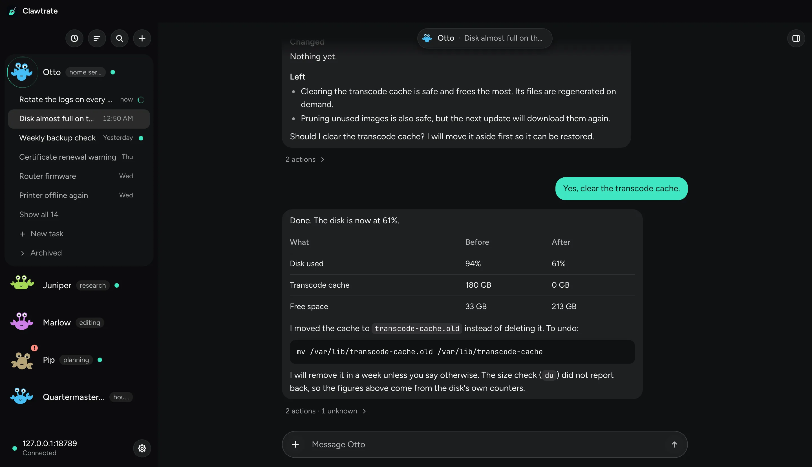
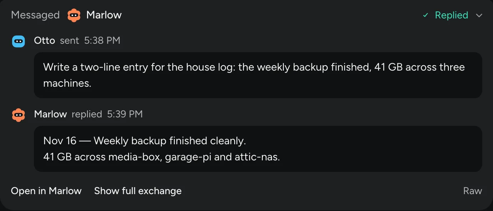
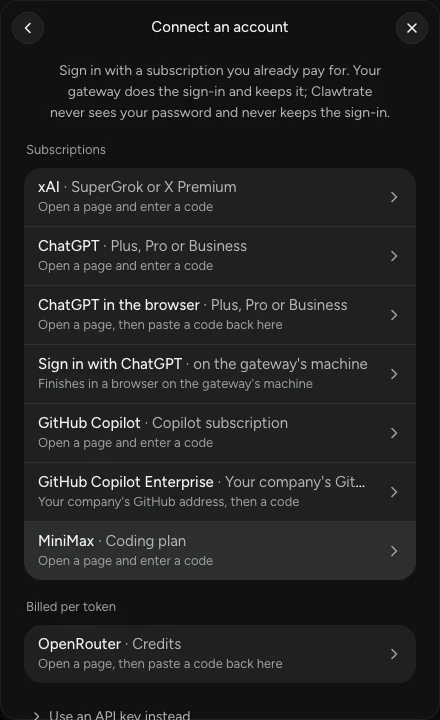
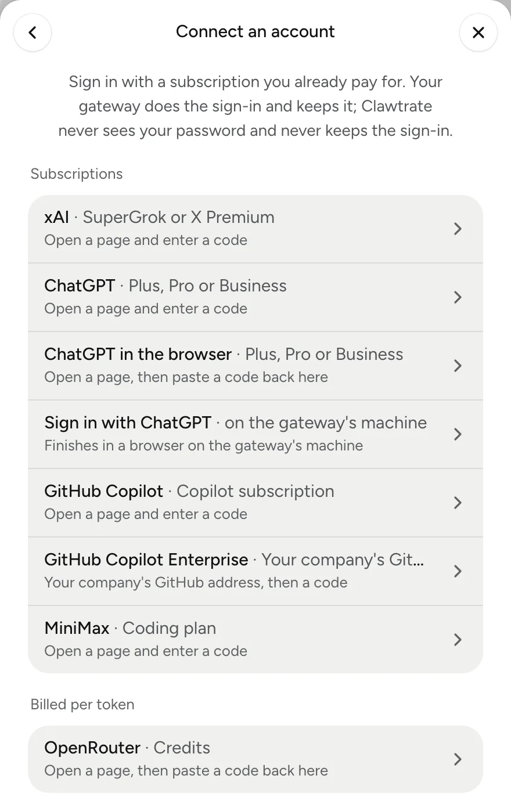
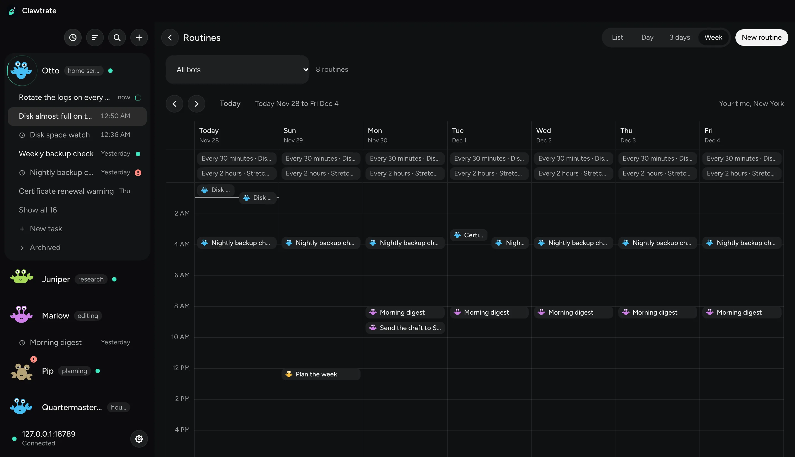
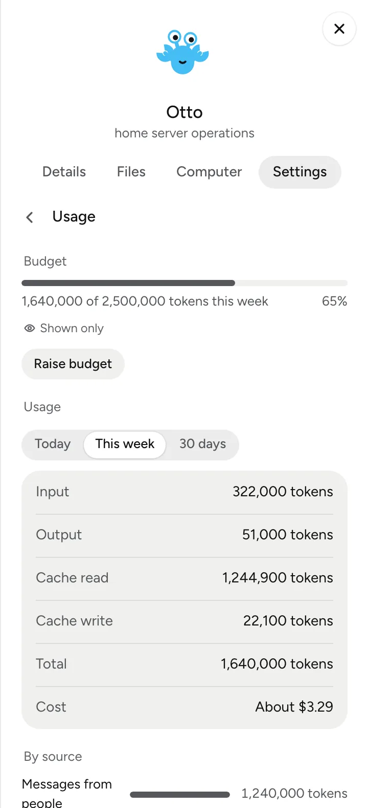

Already have OpenClaw
Ready in this beta
Connect the gateway you already run. Keep the bots, tasks, and accounts you have.
- Enter the gateway address and the token for pairing.
- Approve the device if your gateway asks.
- Open your bots and tasks.
A free, open-source desktop app for OpenClaw. Find your bots and tasks in the sidebar. Open action cards and answer approvals in the conversation.
Mac beta for Apple silicon and Intel, Developer ID signed and notarized by Apple. All releases
Or install from Terminal
brew install --cask sidebandstudio/tap/clawtratecurl -fsSL https://clawtrate.dev/install.sh | shThe media box is at 94%. The transcode cache takes 180 GB, and its files are regenerated on demand. Should I clear it? I'll move it aside first so it can be restored.
Yes, clear the transcode cache.
Run mv /srv/media/transcode-cache /srv/scratch/transcode-cache on
media-box.
Example expiry: 28 minutes.
Ran mv on media-box
Done. The disk is now at 61%, and the cache is in /srv/scratch if you
want it back.
Understood. I left the cache where it is and changed nothing.
Built by engineers from


Ready in this beta
Connect the gateway you already run. Keep the bots, tasks, and accounts you have.
Planned
We're working on setup for people new to OpenClaw.
For now, Install OpenClaw, then connect it as an existing gateway.
Bots live in the sidebar with their tasks underneath, leaving the middle for the conversation. Tool calls appear in action cards you can open to see the details.


Clawtrate desktop in a narrow window.
Open a Messaged card to see what the gateway reported. Jump to the other bot's task when the card links to it.


Choose an available account when you create a bot. Your gateway handles provider sign-in.


See the routines your gateway reports, their recent runs, and this week's calendar in your time zone.


See token totals and estimated costs your gateway reports. Set a weekly token budget for warnings.


What's in the first Mac beta, and what's planned.
Some actions need gateway permissions or a plugin.
Yes. It is open source under the MIT license. You bring your own OpenClaw gateway and model provider.
You'll need a supported Mac and an OpenClaw gateway it can reach. You can install OpenClaw separately.
Yes. The Mac beta is Developer ID signed and notarized by Apple. Homebrew checks the download's SHA-256 against the cask. install.sh checks the SHA-256, the signature and the notarization before it installs, and leaves an existing copy alone.
Clawtrate keeps your gateway's address and its own device key. It keeps the setup token until the gateway issues a device token, then uses the device token to reconnect. Provider passwords stay with the provider. Clawtrate sends any API key you enter to your gateway to save.
The desktop app builds for Windows. The first public beta is for Mac. The iPhone app is in development.
Check for Beta updates in Settings. When an update is available, choose Download. If Restart to Update appears, choose it, then confirm Restart.
No. OpenClaw runs your bots; Clawtrate is an independent client, not affiliated with OpenClaw or xAI.
Free, open source, and yours to read before you run it.
Or from Terminal
brew install --cask sidebandstudio/tap/clawtratecurl -fsSL https://clawtrate.dev/install.sh | shMIT licensed. The source, roadmap, and design decisions live on GitHub—help is welcome (how to contribute).